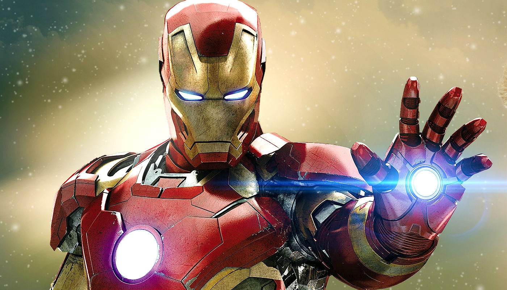

Homem de Ferro
Homem de Ferro, o herói da armadura tecnológica, surgiu em março de 1963, na HQ Tales of Suspense #39. Símbolo da livre iniciativa, o empresário Tony Stark coube bem às histórias de Guerra Fria que Stan Lee, Larry Lieber, Don Heck e Jack Kirby imaginavam para o super-herói da Marvel Comics.

The Flash
Criado pelo escritor Gardner Fox e pelo artista Harry Lampert, o Flash original estreou em Flash Comics #1 (1940). Uma vez apelidado velocista escarlate, o Flash possui supervelocidade e consegue correr a 1079 milhões de km/h, o que permite até violar certas leis da física.